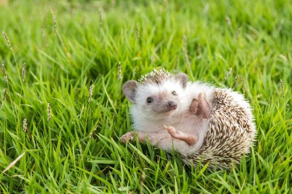

Los erizos son omnívoros, lo que significa que comen tanto plantas como animales. La dieta de un erizo salvaje varía según la estación del año. En primavera y verano comen sobre todo insectos, como escarabajos, saltamontes, orugas y arañas. También comen otros animales pequeños como roedores, ranas y lagartos.
